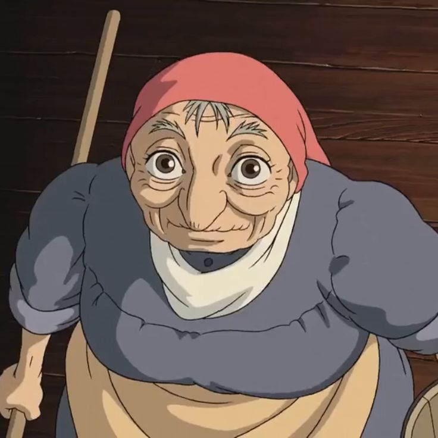

Mijn vaardigheden
Door jarenlange ervaring als hoedenmaakster en mijn nieuwsgierigheid
naar magie en creativiteit, heb ik een brede kennis en vaardigheden
ontwikkeld. Hier zijn enkele van mijn competenties:
-
hoedenontwerpen: ontwerpenvan unieke, elegante en
functionele hoeden.
-
Materialen en technieken: werken met
verschillende stoffen en het toepassen van decoratieve technieken
-
Creatief probleemoplossend: nieuwe oplossingen
vinden voor complexe ontwerpen.
-
Magische Innovaties: Toepassen van magie in
hoeden en accessoires.
-
Communicatie & Samenwerking: Effectief
samenwerken met klanten en creatieve teams.
-
Koken & Gastvrijheid: Naast hoeden maken, mijn
passie voor koken en gastvrijheid inzetten.
